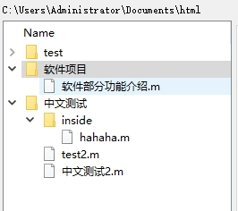
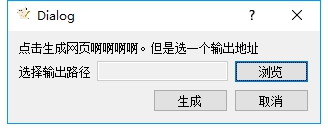
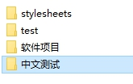
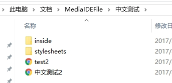

软件雏形逐步显现，今天简单介绍一下开发的这个软件目前有什么用。（仅仅是目前，还有些没开发的功能就不剧透了）
现在软件提供可视化的文章管理机制。

希望用户只需要关注文章本身，就可以生成html,完成对网站的更新（公众号网站deviluna.com）。

通过这么一个简陋的界面就可以生成对应的网页了

就这样，对应文章的网页全都生成了。
不过目前待优化的地方很多，自动化并不完善，不过已经能一定程度减轻人工负担。等工具大完善之后，公众号和网页更新的频率就可以提升了。（以前人工适配网页太麻烦了）